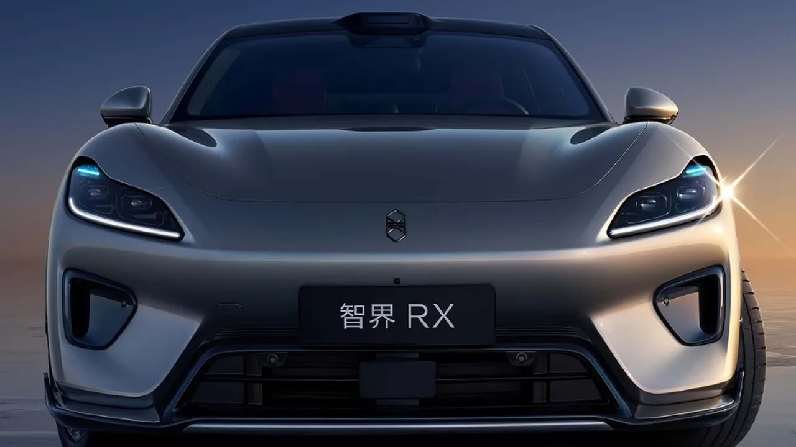
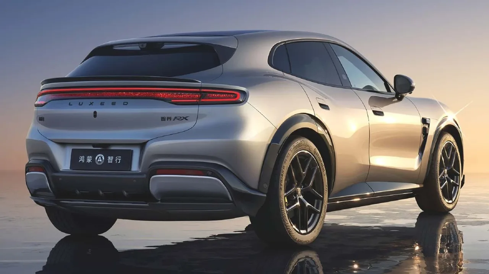
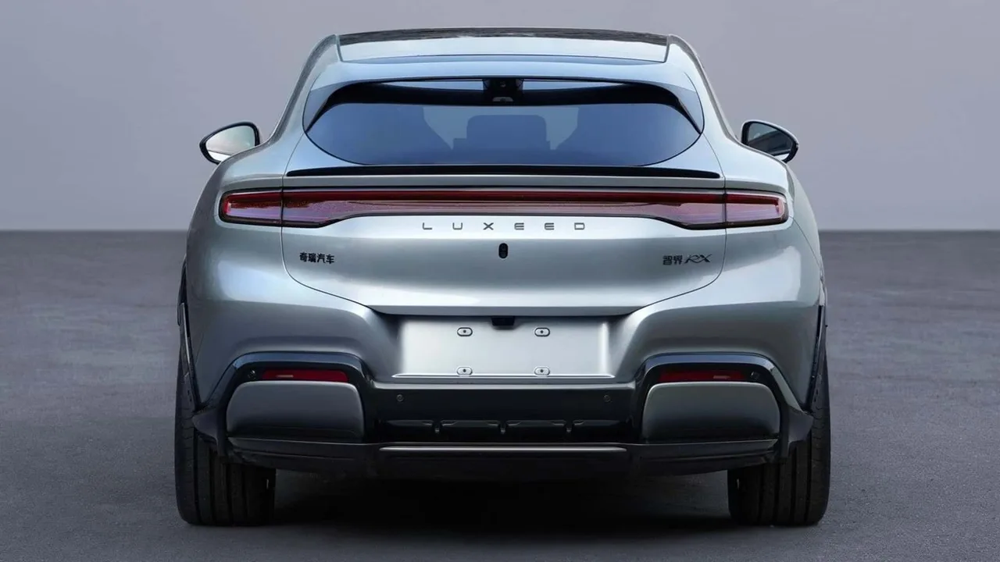

▲ Luxeed RX. 화웨이 하모니 인텔리전트 모빌리티 얼라이언스와 체리자동차가 합작한 럭셔리 전기 SUV다 ⓒ Luxeed 제공(via Motor1)
중국 전기차 브랜드 Luxeed(智界)가 새로운 럭셔리 전기 SUV 'RX'를 공개했습니다. 체리자동차와 화웨이의 자동차 연합체 HIMA(하모니 인텔리전트 모빌리티 얼라이언스)가 함께 만든 이 차는, 낮게 눌린 루프라인과 넓게 부풀린 후면 펜더 디자인으로 공개 직후부터 "페라리 푸로산게를 닮았다"는 반응을 얻었습니다.
1. 왜 다들 "페라리 닮았다"고 할까
Luxeed RX의 디자인에서 가장 눈에 띄는 요소는 쿠페형 SUV 특유의 낮게 눌린 루프와, 뒤로 갈수록 넓어지는 펜더 라인입니다. 이 실루엣이 3억원대 페라리 최초의 SUV '푸로산게'와 닮았다는 평가를 받으며 공개 직후 화제를 모았습니다. LED 헤드램프, 플랩형(숨겨진) 도어 핸들, 라이다 센서까지 더해져 고급 전기 SUV의 문법을 충실히 따르고 있습니다.

▲ Luxeed RX의 정면. 슬림한 LED 라이트바와 낮은 후드라인이 스포츠카 실루엣을 강조한다 ⓒ Luxeed 제공(via Motor1)
2. 사륜구동 585마력, 후륜구동은 852km
파워트레인은 두 가지로 나뉩니다. 후륜구동 모델은 277kW(371마력)를, 사륜구동 모델은 437kW(585마력)를 냅니다. 배터리는 81.1kWh와 100kWh 두 용량 중에서 선택할 수 있는데, 최고 마력을 내는 사륜구동과 최장 주행거리는 서로 다른 트림에서 나옵니다. CLTC 기준 최대 852km는 100kWh 배터리를 얹은 '후륜구동' 모델의 기록이며, 585마력 사륜구동 모델의 정확한 주행거리는 별도로 공개되지 않았습니다. 다만 CLTC는 중국 인증 기준으로 실제 국내외 인증 주행거리는 이보다 낮게 측정될 가능성이 큽니다.
| 항목 | 후륜구동(81.1kWh) | 후륜구동(100kWh) | 사륜구동 |
|---|---|---|---|
| 출력 | 277kW(371마력) | 437kW(585마력) | |
| 주행거리(CLTC) | 약 700km | 최대 852km | 미공개 |
| 예상 가격 | 약 5천만원대(보조금 전) | ||

▲ Luxeed RX의 후면. 전체 폭을 가로지르는 LED 램프바와 부풀린 펜더가 페라리 푸로산게 실루엣을 연상시킨다는 평가를 받았다 ⓒ Luxeed 제공(via Motor1)
3. "전직 페라리 디자이너 영입" 주장, 페라리는 부인
Luxeed 측 임원이 "전직 페라리 수석 디자이너를 영입했다"고 밝히면서 논란이 시작됐습니다. 하지만 페라리 홍보 담당자는 이 주장을 즉각 반박했습니다. 회의론자들은 페라리의 실제 수석 디자이너 플라비오 만조니가 여전히 같은 자리를 지키고 있다는 점을 지적했고, 해당 발언이 담긴 원본 게시물은 이후 삭제됐습니다. 중국 소셜미디어에서는 이 차가 샤오미 YU7과도 외관이 닮았다는 지적과 함께, 완전 자동이 아닌 기계식 도어 핸들을 적용한 이유가 중국의 안전 규제 때문일 수 있다는 분석도 나왔습니다.

▲ Luxeed RX 후면 로고. 체리자동차(奇瑞汽车)와 Luxeed(智界) 브랜드가 함께 표기돼 있다
4. 5천만원대, 샤오미 YU7과의 정면 승부
공식 가격은 아직 발표되지 않았지만, 경쟁 모델로 꼽히는 샤오미 YU7과 비슷한 수준인 5천만원대(중국 위안화 기준)로 예상됩니다. 585마력·사륜구동에 800km를 넘나드는 주행거리를 갖춘 차가 이 가격대에 나온다면, 중국 내수 프리미엄 전기 SUV 시장에서 상당한 파급력을 가질 수 있습니다. 다만 정확한 가격과 출시 시점은 향후 공식 발표를 지켜봐야 합니다.
5. 정리 — 디자인 논란을 넘어선 실체
Luxeed RX는 디자인 표절 논란과 별개로, 스펙만 놓고 보면 상당히 공격적인 전기 SUV입니다. 585마력 사륜구동의 강력한 가속력과, 후륜구동 100kWh 모델의 CLTC 기준 852km 주행거리는 각각 동급 프리미엄 전기 SUV 중에서도 상위권에 속합니다. "페라리를 닮았다"는 화제성이 실제 판매로 이어질지, 아니면 논란만 남긴 채 묻힐지는 정식 출시 이후 시장 반응에 달려 있습니다.